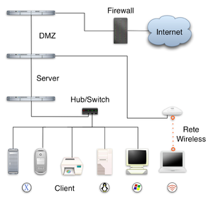

| In informatica e telecomunicazioni una Local Area Network (LAN) (in italiano rete in area locale, o rete locale) è una tipologia di rete informatica contraddistinta da un'estensione territoriale non superiore a qualche chilometro. Si tratta storicamente delle prime tipologie di reti informatiche realizzate al mondo per semplicità di realizzazione e costi sostenibili anche da piccoli privati |
|  |